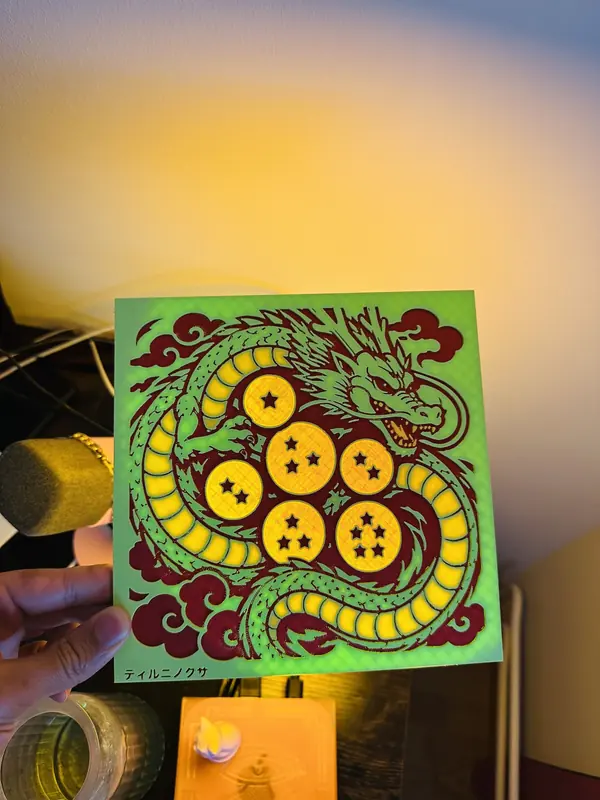
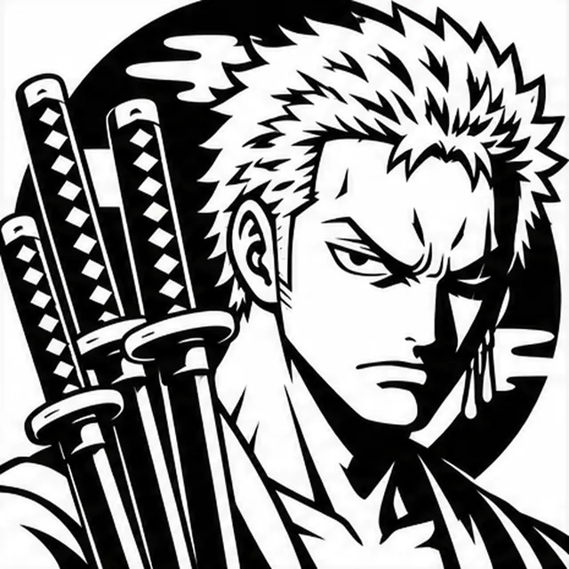
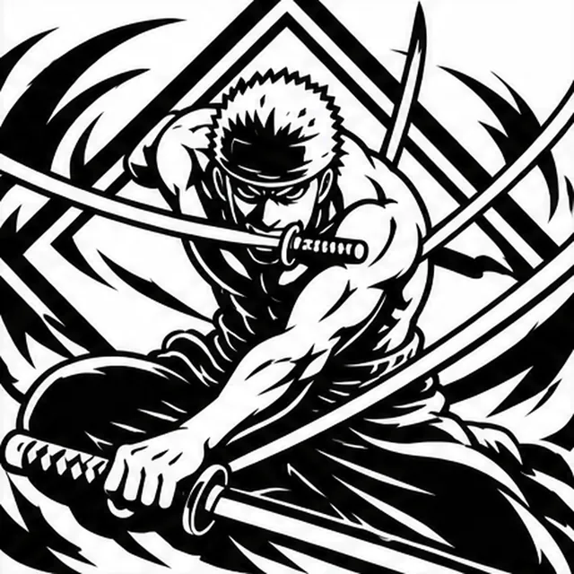
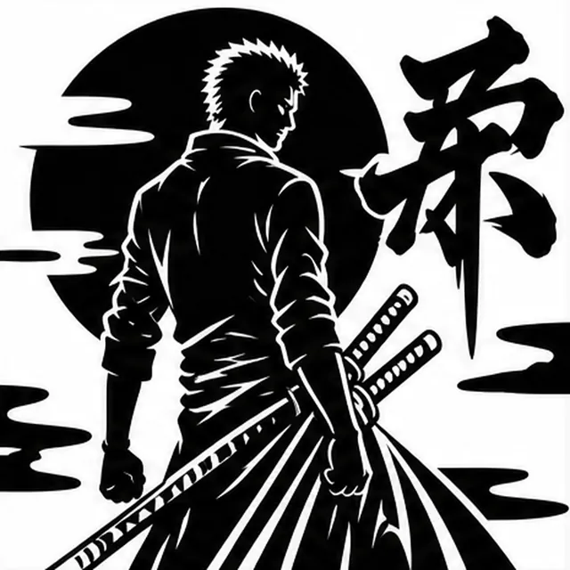
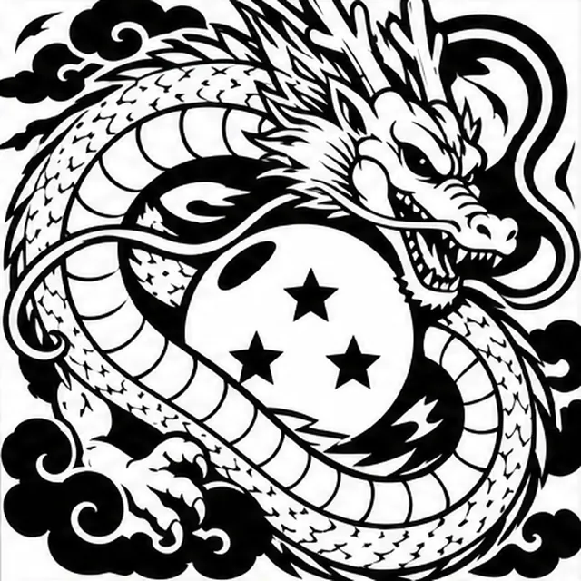
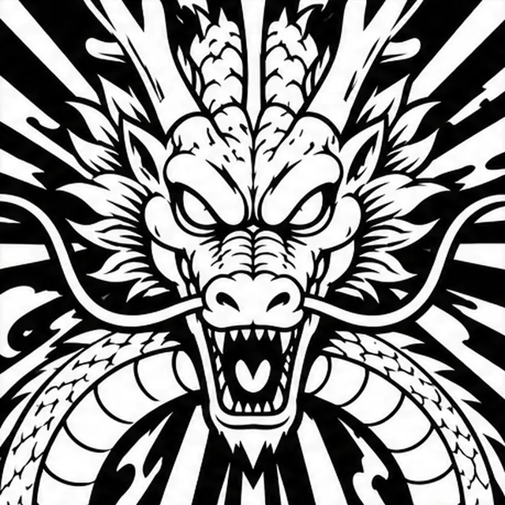
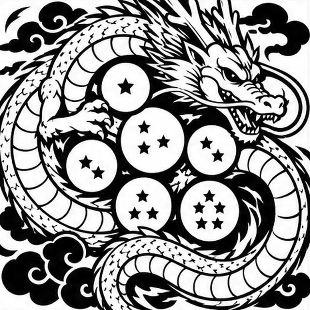

Project · fan art
Zoro & Shenron plaques
Six engraved bookshelf plaques inspired by One Piece and Dragon Ball, 195 mm square, rebuilt from illustrated concepts. One is printed; the other five are prototypes.
Real print
The Shenron plaque, off the printer


Four colours on a one-nozzle printer: green dragon, yellow belly, red engraving and signature, orange balls, with a swap at every colour change.
Six designs
The stencils
Each design starts as an illustrated concept and is redrawn as a stencil thick enough for a 0.4 mm nozzle.






In 3D
Spin the real files
Pick a design, then open it in 3D. The viewer shows the meshes that go into the printer files.
Loads the plaque meshes and the 3D viewer (about 2 MB).
195 × 195 × 4 mm, 1 mm recessed artwork, 0.4 mm nozzle assumed. Prototype files: check every filament profile in Bambu Studio before printing. The Shenron file is the one that was printed.